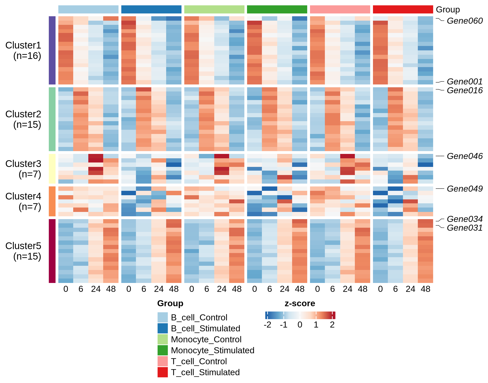
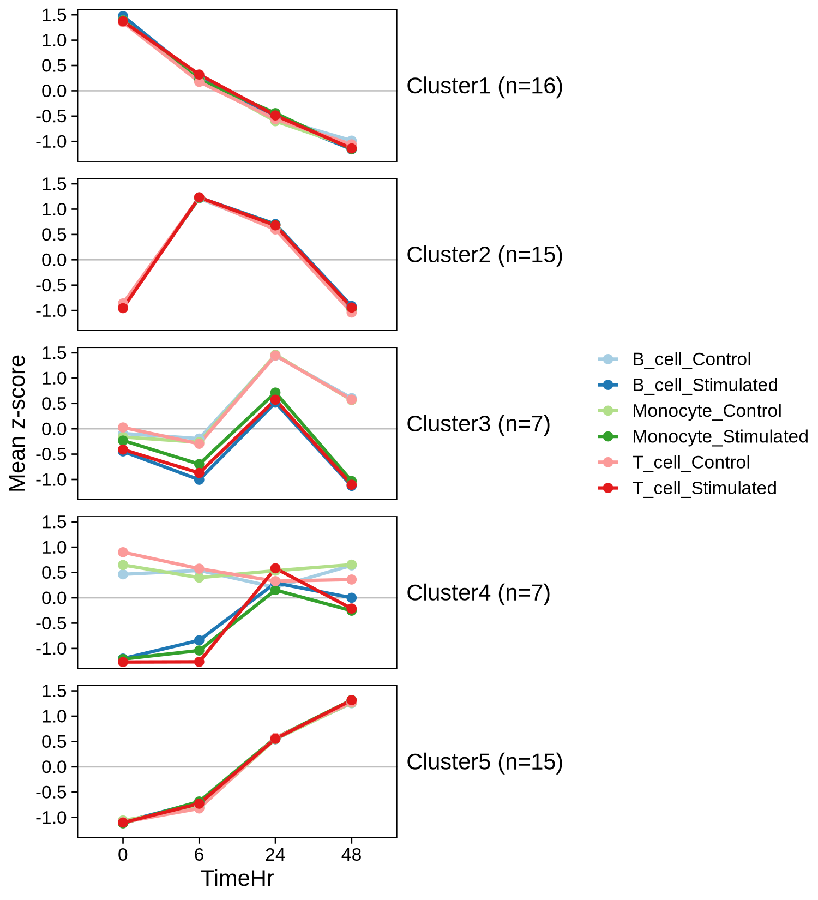

Single-cell data
ModuleViz clusters features across an ordered set of samples, so single cells are first summarised into pseudobulk profiles. pseudobulk_cells() accepts a SingleCellExperiment, a Seurat object, or a (sparse) count matrix with per-cell metadata, groups the cells by the columns you name, and returns a SummarizedExperiment with summed counts and log2 CPM.
# sce: a SingleCellExperiment (or Seurat object) with raw counts
sce <- simulate_single_cell_example(cells_per_sample = 20)
pb <- pseudobulk_cells(
sce,
time_col = "TimeHr",
sample_col = "SampleID", # keeps biological replicates separate
group_col = "Condition",
celltype_col = "CellType", # one set of profiles per cell type
min_cells = 10
)
pb <- select_variable_features(pb, n = 2000)
pb$Group <- paste(pb$CellType, pb$Condition, sep = "_")
obj_sc <- longitudinal_cluster(
pb,
time_col = "TimeHr",
group_col = "Group",
k = 5,
aggregate_replicates = TRUE
)
longitudinal_heatmap(obj_sc,
annotation_cols = c("CellType", "Condition", "TimeHr"))
pattern_lineplot(obj_sc)- For log-normalised data, use
fun = "mean"to average values instead of summing counts. - For data without discrete time points, pass a continuous ordering such as pseudotime as
time_coland setn_bins; cells are split into equal-sized bins along it and the bin index becomes the time axis. - Reading a
Seuratobject needs theSeuratObjectpackage.
A complete script is in examples/example_single_cell_pseudobulk.R.

